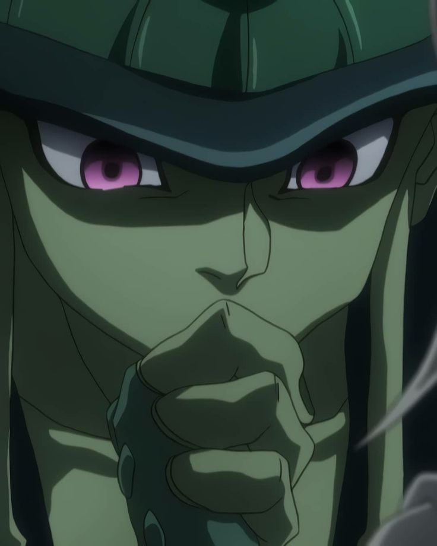
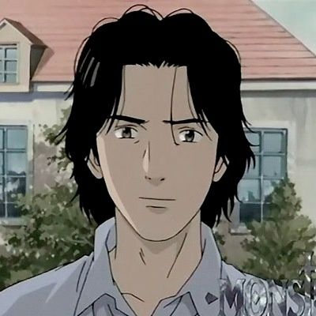

Neeeelli
Nelli Jazmín Gutiérrez Sosa

Literalmente yo
TolkienGod
¿Por qué deberías leer a Tolkien?
Tolkien (conocido por escribir El Señor de los Anillos) es simplemente una carta de amor a la literatura.
El universo que creó es el más completo y complejo que haya leído, no puedes encontrar
agujeros en la trama de sus libros. Simplemente ese hombre es un genio, creó desde cero su universo,
compuso un idioma completamente funcional (élfico) con sus lenguas respectivas sólo para sus novelas.
Creó mapas que le dan la forma a su tierra y por supuesto cientos de leyendas e historias épicas que son la base de su mundo ficticio.
Su forma de escribir es hermosa, elegante y sencilla a la vez. Sus personajes están bien desarrollados; sus relatos, épicos e interesantes. Entre sus novelas destacan: la trilogía de "El Señor de los Anillos", "Beren y Lúthien", "El Sillmarillion", "La Caída de Gondolin", entre otros. Sin embargo, si nunca has leído al autor, te invito a que lo hagas, puedes empezar con "El Hobbit". No te arrepentirás :))
Comidas favoritas
- Enchiladas
- Mole
- Pipian
Series favoritas
- Haikyuu
- Hunter x Hunter
- Fullmetal Alchemist
Canciones favoritas del momento
A Rose for Epona - EluveiteFor the Sake of Revenge - Sonata Arctica
M. I. A. - Avenged Sevenfold
Personajes favoritos
| Nombre | Foto | Explicación |
|---|---|---|
| Andrew Neiman (Whiplash) |
 |
Me siento identificada con historia de este personaje.
Es un hombre perseverante, increíblemente terco que persigue sus sueños hasta el final. Además, muestra que estamos muy propensos a caer en el error en la busqueda de la perfección, lo cual es muy peligroso |
| Meruem (HunterxHunter) |  | Sin duda es el personaje con el mejor desarrollo que haya visto. Es uno de los antagonistas de la serie HunterxHunter. Acompañamos a este personaje desde su nacimiento (literalmente) hasta su muerte. Al inicio nos presentan a alguien orgulloso, intolerante e indiferente. Es un personaje necesario para hacernos reflexionar acerca de la luz y la oscuridad de la propia humanidad. |
| Kenzo Tenma (Monster) |
 | Tiene una personalidad e ideas en general muy interesantes, además de un desarrollo muy completo. Tenma es un destacado neurocirujano, desinteresado en bienes materiales y siempre dispuesto a ayudar al prójimo. Este sentimiento altruista que tiene, se recalca durante toda la serie. |
Mis temas favoritos del curso web:
- Github
- HTML
- CSS
- Bases de Datos
- PHP